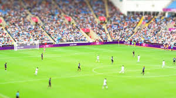

Sepak Bola

-
Sepak Bola berasal dari dua kata yaitu "Sepak": dan "Bola". Sepak atau meyepak dapat di artikan menendang (menggunakan kaki) sedangkan "bola" yaitu alat permainan yang berbentuk bulat berbahan karet, kulit atau sejenisnya. Dalam permainan sepak bola, sebuah bola disepak/tendang oleh para pemain kian kemari. Jadi secara singkat pengertian Sepak bola adalah suatu permainan yang dilakukan dengan cara menendang bola kian kemari yang dilakukan oleh pemaian, dengan sasaran gawang dan bertujuan memasukan bola ke gawang lawan. Setelah kita tahu pengertian sepak bola mari kita lanjutkan dengan Teknik Dasar permainan Sepak bola. Teknik Dasar Permainan sepak bola dapat diartikan gerak dasar yang harus dikuasai oleh seorang pemain sepak bola. Jika seseorang ingin melakukan permainan sepak bola, ia harus tahu dan mampu melakukan teknik dasar atau gerak dasar permainan tersebut. Apa sajakah teknik dasar permainan sepak bola yang harus dikuasai?